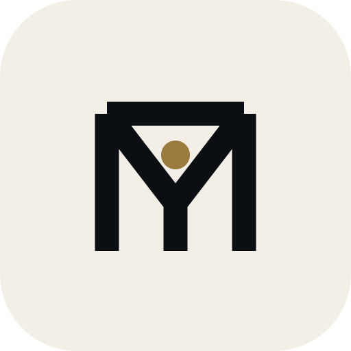

Build yourself. Build your systems. Build your wealth responsibly. Live with purpose.
Brand philosophy: extraordinary ambition is carried by discipline, systems and responsibility, with purpose reaching beyond wealth.
01 · BRAND INTERPRETATION
Audience
Ambitious individuals and founders building from local to international scale, starting from their present reality.
Ambitious individuals and founders building from local to international scale, starting from their present reality.
Emotional response
Calm authority and trust. Capability, not hype.
Calm authority and trust. Capability, not hype.
Key idea
A structured path with a single point of self at the centre, from which systems connect.
A structured path with a single point of self at the centre, from which systems connect.
Must avoid
Crowns, dollar signs, rockets, globes, circuit brains, religious iconography, flashy metallics.
Crowns, dollar signs, rockets, globes, circuit brains, religious iconography, flashy metallics.
02 · THREE CONCEPTS
1a
The Strategic Monogram
Idea. T bar as horizon, M as two pillars and a descending vertex; a gateway.
Type. Geometric sans, semibold. Palette. Ivory on obsidian.
Strength. Ownable letterform, strong silhouette. Risk. Reads as a plain TM glyph without a focal point.
App icon. Solid at 20px. Scale. Extends to sub-brands as a gate motif.
Type. Geometric sans, semibold. Palette. Ivory on obsidian.
Strength. Ownable letterform, strong silhouette. Risk. Reads as a plain TM glyph without a focal point.
App icon. Solid at 20px. Scale. Extends to sub-brands as a gate motif.
1b
The Symbol of Transformation
Idea. Three rising columns, with a champagne point above the last: potential becoming achievement.
Type. Same sans, lighter weight. Palette. Ivory, champagne.
Strength. Clear progression story. Risk. Close to bar-chart and signal-strength icons.
App icon. Clear, but generic. Scale. Limited, finance-leaning.
Type. Same sans, lighter weight. Palette. Ivory, champagne.
Strength. Clear progression story. Risk. Close to bar-chart and signal-strength icons.
App icon. Clear, but generic. Scale. Limited, finance-leaning.
1c
The Global Intelligence Emblem
Idea. Nested pointed arches around a central node: layers of systems around one self.
Type. Sans with wide tracking. Palette. Ivory, champagne.
Strength. Architectural and balanced. Risk. The arch reads as a mosque or doorway, which the brief asks to avoid.
App icon. Inner arch fills in at 20px. Scale. Good, but religious reading in some markets.
Type. Sans with wide tracking. Palette. Ivory, champagne.
Strength. Architectural and balanced. Risk. The arch reads as a mosque or doorway, which the brief asks to avoid.
App icon. Inner arch fills in at 20px. Scale. Good, but religious reading in some markets.
1a Monogram
1b Transformation
1c Emblem
Originality
High
Low
Medium
Small-size legibility
High
High
Medium
Meaning
Medium, High once refined
Medium
High, with risk
Scalability across niches
High
Low
Medium
Silhouette in black
Strong
Good
Good
03 · RECOMMENDATION
Take 1a forward, with one added idea.
It is the most ownable and the most scalable: a letterform is not tied to finance, a country or a religion. Its weakness was a missing focal point. The refinement fills the triangle between the T bar and the M vertex with a single champagne point, the self at the centre from which systems connect. The vertex continues into a stem, so the T reads inside the M. 1c is rejected for its religious-building reading; 1b for resemblance to chart icons.

04 · MASTER LOGO · HORIZONTAL AND STACKED
05 · SYMBOL, APP ICON, SMALL SIZES

06 · LIGHT, DARK, MONOCHROME
07 · COLOUR AND TYPE
Obsidian #0B0F14
Primary ground, authority, depth
Primary ground, authority, depth
Champagne #C9A96A
The point and "Me" on dark; distinction
The point and "Me" on dark; distinction
Deep Gold #9A7A3F
Champagne on light grounds (3:1 or better)
Champagne on light grounds (3:1 or better)
Ivory #F4EFE6
Symbol on dark, light ground, clarity
Symbol on dark, light ground, clarity
Emerald #1F6B57
Product accent only (growth, ethics); not in the logo
Product accent only (growth, ethics); not in the logo
Typography. Wordmark set in Manrope SemiBold with "Me" in Regular, tracking +1%. Manrope is licensed under the SIL Open Font License, free for commercial use and embedding. UI text uses Inter (also OFL). The delivered SVG wordmarks use live text with a Helvetica/Arial fallback, so install Manrope or outline the text in a vector editor before print production.
Usage. Clear space equals the height of the champagne point's surrounding triangle (one quarter of symbol height) on all sides. Minimum size: symbol 16px / 4mm; horizontal logo 120px wide / 25mm; stacked 80px wide. Use dark colour on obsidian or midnight, light colour on ivory or white, mono when one ink is available. Do not add gradients, shadows, outlines, rotation or other colours, and do not redraw the point.
08 · FILES AND QUALITY CONTROL
Created in /brand (SVG): symbol, horizontal and stacked in dark, light, black and white variants; app-icon and app-icon-light; the three concept marks. No PNG exports or standalone spec document were produced.
Checked: name spelled "Trillionaire Me" in every wordmark; symbol is flat and gradient-free; renders in one colour; legible at 16px in the strip above. Wordmark font is not embedded. Not checked: trademark clearance, which should be done before launch.